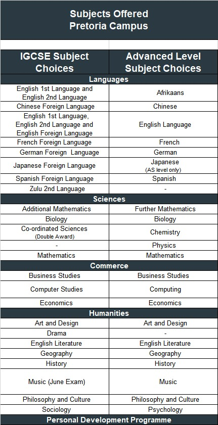

Home chevron_right Pretoria Campus
Subjects offered - Pretoria Campus
Cambridge IGCSE (ages 15–17)
The International General Certificate of Secondary Education (IGCSE) is a globally recognised qualification typically completed over two years.
Students aged 15 to 17 who have completed Grade 8 or the Checkpoint stage select between 7 and 9 subjects. These should include:
- English Language (First, Second or Foreign Language)
- A second language
- Mathematics
- Science
- Information Technology (IT)
The IGCSE is an international school-leaving qualification that prepares students for A Level study or equivalent programmes worldwide.
Scroll down to view subject choices.
Cambridge International AS & A Levels (ages 16+)
The Cambridge Advanced Level (A Level) programme is an internationally respected qualification and one of the most widely accepted credentials for university admission around the world.
Students aged 16 and above who have completed the IGCSE or South African Matric can enrol in this advanced academic stage.
- A Levels are typically completed over two years.
- The first half, known as the AS Level, is usually written at the end of the first year.
- Students normally take three to four subjects, although two may be sufficient depending on the university.
A Level subjects are academically rigorous and internationally benchmarked. In South Africa, A Level standards are considered equivalent to the first year of university study.
With the appropriate combination of AS or A Level subjects, students can gain admission to universities in South Africa and abroad.
Scroll down to view subject choices.
What Is the Cambridge curriculum?
The Cambridge International curriculum is a globally recognised education system developed by Cambridge Assessment International Education, part of the University of Cambridge.
It offers a flexible, skills-based approach to learning that prepares students for success at university and beyond. The curriculum is taught in over 160 countries and is valued for its academic rigour, international benchmarks, and emphasis on independent thinking.
At British International College, we follow the full Cambridge pathway:
- Cambridge Checkpoint (Junior High)
- Cambridge IGCSE (International General Certificate of Secondary Education)
- Cambridge AS & A Levels (Advanced Level)
- Each stage builds on the one before, giving students a clear and progressive academic structure. Cambridge qualifications are accepted by universities in South Africa and around the world, including the UK, USA, Canada, Europe, and Australia.
